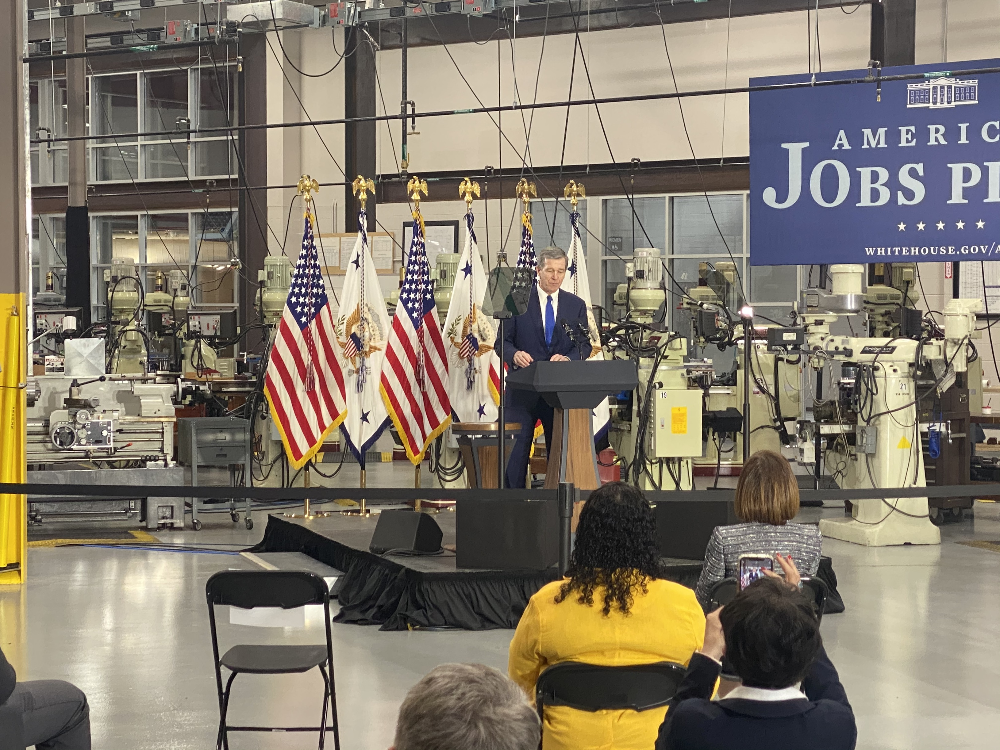

  <div> <div> <div>Arrived at 11:11 at Guilford Technical Community College. We are in the pre-program remarks section. Room picture is attached. We’re surrounded by machinery. Picture attached because I don’t know machinery. </div> <div><br> </div> <div>There are about 30 people in seats. Working to find out who is in the chairs. The event is being live-streamed on the White House YouTube channel.</div> <div><br> </div> <div>On background from OVP:</div> <div>Harris’ “first extended econ speech at the Center for Advanced Manufacturing at Guilford Technical Community College. The purpose of the speech is to focus on what President Biden and Vice President Harris have accomplished in the first 90 days, why the AJP is critical to creating an economy that works for all Americans, and lay out a vision for how the AJP invests in creating <i><u>good jobs</u></i> – <i>good jobs</i> are jobs empowering workers, paying a good wage, and offering the chance to do meaningful and purposeful work rebuilding our economy.” </div> <div><br> </div> <div><br> </div> <div><br> </div> <div> <div>-- <div> <p> Eugene Daniels | White House Reporter &amp; Playbook co-Author | <b>POLITICO </b>▊▊▊▊▊▊▊▊▊▊ | <a href="http://twitter.com/EugeneDaniels2">@EugeneDaniels2</a></p> <br> </div> </div> </div> </div> </div> 